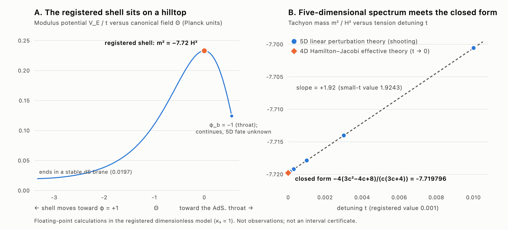
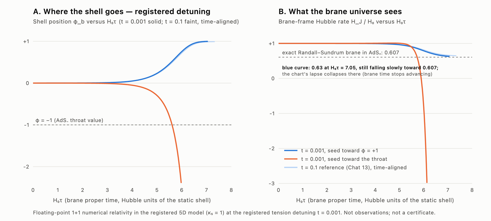

Ricardo Maldonado · independent research program · 2025–2026
Could a higher-dimensional “blast” have sparked our Big Bang?
HDBLAST asks whether a violent gravitational event in a fifth dimension could have transferred energy into our four-dimensional universe and started the hot Big Bang. The equations, code, results, failures and corrections are all public.
The idea
Our universe may behave like a thin shell (a “brane”) inside a larger five-dimensional space filled with gravity and a scalar field. If the shell sits in an unstable balance, like a ball on a hilltop, it can roll off and release energy. HDBLAST asks whether such an event could have produced the hot, dense state where the standard Big Bang story begins. It would extend that well-tested story, not replace it.

What has been found (2 Oct 2026)
| Result | Status |
|---|---|
| A specific 5D Einstein–scalar model is fixed in advance: W(φ)=1−φ+φ³/3, shell tension σ=2W+δ(1+cφ), δ=0.001 | Definition |
| Within the model, the registered shell solution exists (computer-assisted proof, locally unique; a statement about the equations, not about nature) | Certified (conditional) |
| An unstable scalar mode, m² ≈ −7.7179 H², growth e1.657 Hτ (numerically the only one). No unstable mode in the tensor, vector or special-harmonic sectors (mode stability, not full linear stability). | Certified (mode) / Numerical (uniqueness) / Exact (other sectors) |
| A closed-form 4D theory matches the 5D spectrum to ~10⁻⁶ and predicted the turnaround before the 5D simulation confirmed it | Exact + Numerical |
| Full nonlinear 5D evolution: two fates, relaxation toward an empty de Sitter brane (endpoint not yet reached in the simulations) or reversal and collapse | Numerical |
| No hot, radiation-filled universe from the shell's own homogeneous, classical motion (no added matter) | Negative |
| Corrected late-time static solution (numerical); a proposed matter extension with an exact energy-exchange law | Numerical / Exact (proposal) |
| July 2026 gravitational-radiation claim withdrawn after audit | Withdrawn |
| Pulsar-timing “knee” signature: screened on public data, not derived from the 5D model; strict registered test failed | Screening / Negative |
| New (27 Sept): the corrected end state is linearly stable in the tested sectors; two independent methods agree | Numerical (audited) |
| New (27 Sept): exact series for the end state through eighth order, confirmed to 30–40 digits | Exact |
| New (27 Sept): particle production and six other heating routes give no radiation era in the registered model; leftover vacuum energy is the obstacle | Negative (conditional) |
| New (27 Sept): an added tension term cancels the leftover vacuum, but “dark radiation” stays above observational limits so far | Inconclusive |
| New (28 Sept): with the tension tuned to cancel the leftover vacuum (a model change) and a stand-in energy-transfer formula, a radiation-dominated phase appears; “dark radiation” is 7.3% of the radiation at one transfer rate, within the conservative limit | Numerical (conditional, fine-tuned) |
| New (30 Sept): at a stronger transfer rate the “dark radiation” falls to 2.1%, within the strict current limit (3%). But the phase lasts under half an expansion e-fold before leftover negative vacuum energy recollapses the shell, needs the tension tuned to about 1 part in 10⁴, and still uses the stand-in formula | Numerical (model-internal, conditional) |
| New (30 Sept): replacing the stand-in with particle production derived from the matter extension: with particle masses below the 5D gravity scale, “dark radiation” stays far larger than the radiation (no steady state reached in 32 runs) | Inconclusive, leaning negative |
| New (30 Sept): the same test at the registered δ = 0.001 is not completed (numerical breakdown diagnosed but not yet fixed) | Inconclusive |
| New (1 Oct): an energy bound includes both decay radiation and particles that have not yet decayed. In two locally screened archived crossings, the budget remains far below the radiation target at the tested endpoint. | Analytical bound / Exploratory calculation, conditional |
| New (1 Oct): an executed saved-trajectory audit finds an earlier radiation-dominated sampled interval of about 0.314 e-fold in the finer Y = 2 run under a new diagnostic that avoids cancellation by negative vacuum. Its later plateau fails this diagnostic. The earlier registered verdict is preserved. | Post hoc diagnostic |
| New (1 Oct): the particle-mode integrator passes 90 exact pulse checks and 30 fine normalization checks, supplying a verified control for the next physical test. | Registered numerical control |
| New (1 Oct, quantum modes): modes on the archived source-free tuned shell give an integrated count 0.0503% below the corrected estimate for the declared state and momentum band. Quantum coherence adds 10.96% to the particle-only scalar current and reverses the relative pressure’s sign. Ten registered variants and independent mode checks pass. | Numerical: prescribed background, relative stress |
| New (1 Oct, quantum matching): the proposed matter loop requires additional potential and intrinsic-curvature terms in the shell action. The curved-shell absolute source and finite matching coefficients remain unresolved. | Analytical EFT requirement |
| New (1 Oct Pacific / 2 Oct UTC, curved-source readiness): eight reconstruction controls pass after a documented numerical repair. The archived interpolation and initial state have separate ultraviolet obstructions; smoother fits show initial-boundary derivative sensitivity. Exact-rational subtraction checks and 18 independent toy evolutions pass. | Readiness audit: absolute curved source unresolved |
| New (2 Oct): a flat-background quantum source through a mass-zero crossing passes eight registered variants, exact scattering, energy/work and independent pressure-trace checks. Potential and curvature matching are fixed at a stated reference. | Numerical benchmark: prescribed background, fixed convention |
| New (2 Oct): omitting curvature matching makes pressure drift with the regulator despite excellent energy conservation. The direct physical-mode representation shows cutoff convergence and obeys an exact finite-cutoff trace identity. Finite-regulator sources still change by several percent. | Analytical and numerical checks |
| New (2 Oct, massive de Sitter sources): Four common-reference quantum-vacuum cases pass 57 checks, a separate proper-time calculation and an exact direct-pressure check at one curved point. Nineteen classical integrations resolve a tiny stationary response and correct its roundoff-limited sign. | Exact algebra / Numerical, internally checked |
| New (2 Oct, stationary quantum closure): Both quantum sources enter a regular bulk-and-shell solve: 48 roots pass 1,584 corrected checks and independent comparisons. Resolved nonlinear feedback occurs only where the declared gravity hierarchy screen fails. | Numerical stationary model, physical limits unresolved |
The paired quantum sources now close a stationary bulk-and-shell problem numerically. Only the smallest tested positive coupling passes the sampled gravity hierarchy screen; its curvature shift is tiny. Stability, causal evolution and heating remain open. Stationary results and limits · Fresh reproduction.
New (2 Oct, massive de Sitter sources): Both quantum sources are derived from one action in the declared finite convention. These are static vacuum benchmarks and a classical differential response; physical mass and coupling choices, causal time-dependent backreaction and heating remain open. Results and scope · Independent internal review · Fresh reproduction.

Smooth curved-background quantum-source control: a separately registered K384 follow-up passes all 13 acceptance groups. The pressure change from K192 to K384 is 0.2291% of its global comparison scale. The original experiment remains FAIL: its flat control passed, while curved pressure exceeded its original cutoff tolerance. The calculation retains coherent stress and scalar source and checks their common-action exchange when the mass squared touches zero. This is finite-cutoff evidence on a prescribed background; coupled shell evolution, backreaction and thermal radiation remain unestablished. Results and preserved outcomes · Reproduce the calculation · Claims and next steps.
The new curved-source readiness audit quantifies two obstacles to extending the finite-band calculation: geometry interpolation and initial-state preparation. Agreement in the field and expansion rate does not establish reliable high derivatives. Its controls pass; the absolute source on the archived shell, backreaction and a hot Big Bang remain unestablished. Measured results and limitations.
The registered homogeneous model has not produced a hot Big Bang. Tuned variants using a stand-in transfer formula briefly meet the earlier radiation criterion and then recollapse. The new quantum-mode calculation reproduces the corrected integrated count closely for its declared setup, while showing that coherence matters for the scalar force and pressure. Its endpoint excitations are not a radiation fluid. The 2 October checkpoint supplies an absolute source in a fixed matching convention for a flat-space pulse, including the curvature contribution to pressure. Curved-shell matching, coupled evolution, decay and thermalization remain unresolved. Read the matched-source checkpoint. Read the quantum-mode checkpoint; the earlier 1 October diagnostic retains its original scope.
What comes next
Stability
Is the corrected late-time solution stable, and does the blast actually end there?
Particle production
Can the blast's energy become particles and a lasting radiation era, with backreaction included?
Reliable simulations
Control the numerical errors in long five-dimensional evolutions.
New ingredients
Screen matter couplings, bulk “dark radiation”, bubble-universe constructions and a contracting (collapse) phase.
For the hypothesis to become credible it needs a working mechanism, a unique quantitative prediction, independent reproduction, peer review and observational tests. It can fail at any step, and failures will be published.
Explore the research
- Plain-language guide
- Program map: model, chronology, claims ledger and falsification tests
- Research checkpoints: reports, code, data and internal AI referee reviews (not external peer review)
- All Zenodo records
- 27 Sept 2026 checkpoint: stability, exact series, particle production, new mechanisms
- 28 Sept 2026 tuned-vacuum test and 30 Sept 2026 checkpoint: radiation phase, dark-radiation limits, fine-tuning
- 1 October 2026 checkpoint: energy bounds, radiation duration and exact mode controls
- 1 October quantum modes: results, coherence, quantum matching, data and reproduction
- 2 October matched quantum source: pressure matching, regulator and cutoff tests, data, figures and reproduction
Cite
Maldonado, R. HDBLAST: higher-dimensional blast research program. Zenodo, doi:10.5281/zenodo.17088132 (all versions). Separate static-branch companion: 22922928, version 1.0 (23 Sept 2026), concept 22922927. Each Zenodo record states its own licence.
Specialists are invited to check the work and report errors through GitHub issues.